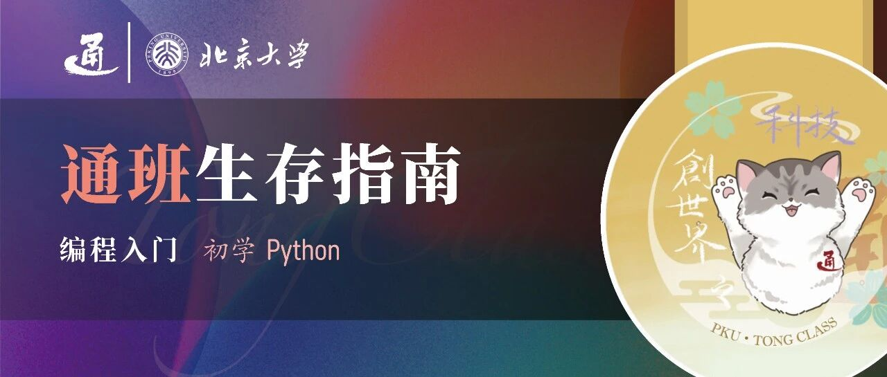

通班生存指南 | 编程入门（2）


请滑动翻阅来自通班的信～
😀
编程不是背诵，而是学习一种“套路”，一种解决问题的思维方式。我们不必纠结于记住所有函数，而是专注于理解核心逻辑，学会如何“指挥”计算机干活。这篇文章不求面面俱到，只为帮你梳理出最核心、最实用的Python“套路”。编程并非高不可攀的魔法，而是一门人人都能掌握的手艺。希望这篇文章能为你扫清障碍，让你自信地迈出通往AI世界的第一步。
Python 是一种“解释型”语言。你可以把它想象成一位同声传译官：你说一句（写一行代码），它就立刻翻译一句（执行一行代码），然后等待你的下一句。这与“编译型”语言不同，后者需要你把整个演讲稿（所有代码）写完，一次性翻译成册（编译成二进制文件），才能去演讲（运行）。Python的这种“即时反馈”特性，让它非常适合做实验、写脚本和快速验证想法。
小贴士：如果你只是想快速练习，可以使用在线编译器，如 Programiz Python Online Compiler（https://www.programiz.com/python-programming/online-compiler/），无需在本地安装配置复杂的环境。
在 ChatGPT 和 GitHub Copilot 这样的AI编程助手普及的今天，我们无需再像过去那样死记硬背所有语法细节。你的重点应该是掌握编程的基本“套路”和常用结构。这就像学做菜，你不需要背下所有菜谱，但必须掌握“切、炒、炖、煮”这些基本功。只要掌握了这些，你就能读懂大多数代码，顺利地跑通项目流程。
学习技巧：强烈推荐使用 ChatGPT 的“学习模式”（Study and Learn）。当你遇到问题时，可以直接问它：“用Python如何实现XXX功能？”然后仔细阅读它给出的代码，不理解的地方继续追问，这是一种在实践中高效学习的绝佳方式。
以下是 Python 编程中你必须掌握的几个核心概念。吃透它们，你就能写出基础且高效的代码。
1. 变量 (Variables)与基本数据类型
变量就像一个贴着标签的“储物盒”，你可以把各种信息放进去。Python 非常灵活，你不需要预先告诉它盒子里要放什么类型的东西，直接放进去就行了。
字符串 (String): 用于存储文本，用引号（单引号'或双引号"）包围。
整数 (Integer): 就是不带小数点的数字。
浮点数 (Float): 就是带小数点的数字。
布尔值 (Boolean): 只有 True 和 False 两个值，用于逻辑判断。
# --- 变量赋值 --- name = "Tongtong" # 这是一个字符串 (str) age = 3 # 这是一个整数 (int) weight = 4.5 # 这是一个浮点数 (float) is_student = True # 这是一个布尔值 (bool) # --- 变量可以被修改 --- age = age + 1 # 现在 age 的值变成了 4 # --- 使用 f-string 格式化输出，非常常用！ --- # 在字符串前加 f，然后用 {} 包裹变量名，就能把变量值嵌入字符串中 print(f"大家好，我叫 {name}，今年 {age} 岁，体重 {weight} 千克。")
最佳实践：给变量起一个有意义的名字，例如用 user_name 而不是 un，这样代码更容易阅读。
2. 条件语句 (Conditionals)
条件语句让程序拥有“决策能力”。它基于某个条件是真是假，来决定执行哪一段代码。主要使用 if、elif（else if的缩写）和 else。
比如，我们根据年龄来判断一个人所处的生命阶段，并结合逻辑运算符 and 来让条件更精确。
age = 25 if age < 13: print("你还是个孩子。") elif age >= 13 and age < 18: # and 表示两个条件必须同时满足 print("你是青少年。") elif age >= 18 and age < 60: print("你是成年人。") else: # 如果以上所有条件都不满足，则执行这里 print("你是老年人。")
核心逻辑：程序会从上到下依次检查 if 和 elif 的条件，一旦找到一个满足的，就执行对应的代码块，然后跳过整个 if-elif-else 结构。如果所有条件都不满足，才会执行 else 部分。
3. 循环 (Loops)
循环用于重复执行某项任务，是自动化处理的核心。Python 中最常用的是 for 循环和 while 循环。
for 循环：遍历序列
for 循环非常适合处理一个集合里的每一个元素，比如列表、字符串或一个数字范围。
cats = ["布偶", "三花", "橘猫"] print("通班人喜欢的猫咪品种有:") for cat in cats: # 依次取出列表中的每个元素，并赋值给变量 cat print(f"- {cat}") # 使用 range() 函数进行固定次数的循环 print("\n数到三：") for i in range(1, 4): # range(1, 4) 会生成数字 1, 2, 3 print(i)
while 循环：满足条件就一直循环
while 循环会在其条件保持为 True 的情况下，持续执行循环体内的代码。
# 从 1 加到 5 count = 1 total = 0 while count <= 5: total = total + count print(f"当前数字是 {count}, 累计总和是 {total}") count += 1# 这句至关重要！更新循环变量，否则会无限循环 print(f"\n最终总和是: {total}")
常见陷阱：使用 while 循环时，一定要确保循环内部有代码能最终改变那个判断条件，否则程序会陷入“死循环”，永远不会停止。
4. 函数 (Functions)
函数是一段为了完成特定任务而封装好的可重用代码块。它能让你的代码更整洁、更有条理，并且避免重复。这个原则被称为 DRY (Don't Repeat Yourself)。
比如，我们写一个更完善的打招呼函数，可以设置默认的问候语。
# 定义一个函数，name 是必须传入的参数，greeting 是可选参数，有默认值 def greet(name, greeting="Hello"): """ 这是一个文档字符串(docstring)，用于解释函数的功能。 它会向指定的人发送问候。 """ message = f"{greeting}, {name}!" return message # return 关键字将结果返回给调用者 # --- 调用函数 --- # 使用默认问候语 message1 = greet("Tongtong") print(message1) # 输出: Hello, Tongtong! # 提供自定义问候语 message2 = greet("通班的小猫", "你好") print(message2) # 输出: 你好, 通班的小猫!
为什么函数很重要：想象一下，如果你需要在10个不同的地方打招呼，如果没有函数，你就得写10遍 print 语句。如果想修改问候语，就得改10次。有了函数，你只需要修改函数内部的一处地方即可。
5. 常用数据结构 (Data Structures)
Python 内置了多种强大的数据结构，它们是组织和处理数据的利器。
列表 (List): []
一个有序的、可变的集合。就像一个购物清单，可以随时添加、删除和修改商品。
# 创建和访问 cats = ["布偶", "三花", "橘猫"] print(f"第一个猫咪品种是: {cats[0]}") # 索引从 0 开始 # 添加和删除 cats.append("波斯") # 在末尾添加 cats.remove("三花") # 删除指定元素 print(f"更新后的猫咪品种列表: {cats}") # 列表推导式 (List Comprehension): 一种简洁高效的创建列表的方式 word_list = ["HELLO", "WORLD"] lower_words = [word.lower() for word in word_list] # 一行代码完成循环和转换 print(f"转换为小写: {lower_words}")
字典 (Dictionary): {}
一个无序的、键值对（key-value）集合。就像一本字典，通过“键”（单词）可以快速查到“值”（释义）。键必须是唯一的。
# 统计字符串中每个字符出现的次数 freq = {} sentence = "hello world" for char in sentence: # get(key, default_value) 是一个安全的方法 # 如果 key 存在，返回其 value；如果不存在，返回设定的默认值 0 freq[char] = freq.get(char, 0) + 1 print(f"字符频率统计: {freq}") # 输出: {'h': 1, 'e': 1, 'l': 3, 'o': 2, ' ': 1, 'w': 1, 'r': 1, 'd': 1}
元组 (Tuple): ()
一个有序的、不可变的集合。一旦创建，就不能修改。常用于函数返回多个值，或者作为字典的键（因为它是不可变的）。
# 比如一个AI模型训练后，通常会同时返回损失值和准确率 def get_metrics(): return (0.1, 0.95) # 返回一个元组 (loss, accuracy) loss_value, accuracy_value = get_metrics() # 这被称为“元组解包” print(f"Loss: {loss_value}, Accuracy: {accuracy_value}")
集合 (Set): {}
一个无序的、不含重复元素的集合。主要用于去重和成员关系测试（判断一个元素是否在集合中），速度极快。
list1 = [1, 2, 3, 3, 4, 4] unique_elements = set(list1) print(f"列表去重后的结果: {unique_elements}") # 输出: {1, 2, 3, 4} list2 = [3, 4, 5, 6] # 使用 & 运算符计算交集 common_elements = set(list1) & set(list2) print(f"两个列表的公共元素: {common_elements}") # 输出: {3, 4}
6. 面向对象初探 (Object-Oriented Programming, OOP)
在AI项目中，几乎所有东西——模型、数据加载器、优化器——都是用“类 (Class)”来组织的。你可以把类看作一张“设计蓝图”，而对象 (Object) 则是根据这张蓝图建造出来的“实体”。
你暂时不必深究OOP的全部理论，但理解以下几个核心概念，能帮你读懂大部分框架代码：
class: 定义一张蓝图的关键字。
__init__: 类的“构造函数”。每当根据蓝图创建一个新对象时，它会自动运行，用于设置对象的初始状态（属性）。self 代表对象本身。
属性 (Attribute): 对象的数据，比如猫的名字和年龄。
方法 (Method): 对象的函数，代表对象能做的行为，比如猫的“自我介绍”。
继承 (Inheritance): 基于一张旧蓝图（父类），创造一张新蓝图（子类），并可以添加新功能。
super().__init__(): 在子类的构造函数中，调用父类的构造函数，完成父类部分的初始化。
让我们用一个更完整的例子来理解。首先定义一个通用的 Animal 类，然后让 Cat 类继承它。
# --- 1. 定义父类 (Parent Class) --- class Animal: def __init__(self, name): print("一个 Animal 对象被创建了！") self.name = name def speak(self): # 父类可以定义一个通用的方法，但可能没有具体实现 raise NotImplementedError("子类必须实现这个方法") # --- 2. 定义子类 (Child Class)，继承自 Animal --- class Cat(Animal): def__init__(self, name, age): print("一个 Cat 对象被创建了！") # --- 3. 调用父类的构造函数来初始化 name 属性 --- super().__init__(name) # --- 4. 添加 Cat 特有的属性 --- self.age = age # --- 5. 重写 (Override) 父类的 speak 方法 --- def speak(self): return f"Meow~" # --- 6. 定义 Cat 特有的方法 --- def introduce(self): print(f"{self.speak()} My name is {self.name}, and I'm {self.age} years old.") # --- 7. 创建一个 Cat 对象 (实例) --- my_cat = Cat("Tongtong", 3) # --- 8. 调用对象的方法 --- my_cat.introduce()
运行结果:
一个 Cat 对象被创建了！ 一个 Animal 对象被创建了！ Meow~ My name is Tongtong, and I'm 3 years old.
通过这个例子，你可以看到子类Cat不仅拥有了父类Animal的name属性，还添加了自己的age属性和introduce方法，并对speak方法进行了定制。这就是继承的威力，它让代码的复用和扩展变得非常方便。
推荐的学习资料
掌握了这些基础套路之后，你可以根据兴趣和需求，选择性地深入学习。
书籍 - 《Python编程：从入门到实践》 (Python Crash Course): 全球最受欢迎的Python入门书之一，理论与实践项目（小游戏、数据可视化、Web应用）结合得非常好，动手性极强。
课程 - CS50's Introduction to Python by Harvard University: 哈佛大学的公开课，免费、质量极高，讲解生动有趣，非常适合零基础的初学者。（https://cs50.harvard.edu/python/）
官方文档 - The Python Tutorial: 当你对某个细节有疑问时，官方文档永远是最权威、最准确的参考。（https://docs.python.org/3/tutorial/）
AI 助手 - ChatGPT/Copilot: 你最耐心的编程导师。遇到任何问题，大胆地向它提问。例如：“请解释一下Python的列表推导式，并给我几个例子”，它会给你非常详尽的回答。
后记：在实践中成长
学习编程最快的方式，永远是“先会用，再深究原理；先动手，再完善理论”。不要害怕犯错，每一个错误提示都是一次宝贵的学习机会。保持好奇心，当你对某个东西的实现方式感到好奇时，就去探索它，去问AI，去和它进行交互式学习。
祝你在这条路上不断试错、持续迭代，享受从零到一创造的乐趣，早日成为一名自信的AI研究者！
关于通班：
撰稿 | 李嘉豪
封面 | 严绍恒